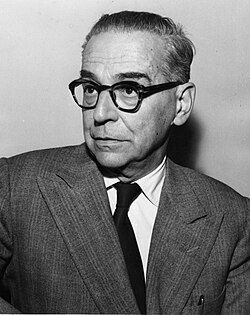

Биографија
Иво Андрић (1892-1975) био је југословенски писац, дипломата и добитник Нобелове награде за књижевност 1961. године. Рођен у Долу код Травника, Андрић је познат по својим делима која истражују историју, културу и људе Босне, као што су „На Дрини ћуприја” и „Травничка хроника”.
Фотографије


Дела
Одабрани одломци
„Све пролази, све се мења, све личи једно на друго, али ипак све остаје у основи исто.”
„Нико не може знати шта нас чека, али неко ипак мора кренути.”
Занимљивости
- Иво Андрић је био дипломата и провео је велики део живота у иностранству.
- Добио је Нобелову награду за књижевност за целокупно дело, са посебним нагласком на „На Дрини ћуприја”.
- Преведен је на више од 40 језика.